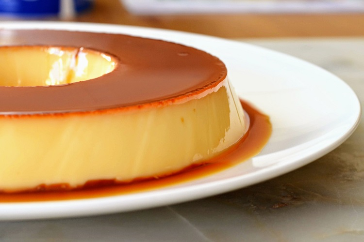

Home
Pudim de Leite Condensado
Para saber mais sobre o chefe, clique aqui!

Uma das sobremesas mais amadas pelo brasileiros é o pudim de leite condensado. Acha uma delícia, mas não sabe com cozinhar, confira a receita abaixo
Descrição
Rendimento: 8 pedaços
tempo de preparo: 40 minutos
Nível de dificuldade: médio
Ingredientes
Pudim
- 1 lata de leite condensado
- 1 lata de leite
- 3 ovos
Calda
- 1 xícara de açúcar
- 1/2 xícara de água
Modo de Preparo
Pudim
- Bata bem os ovos no liquidificador
- Acrescente o leite condensado e o leite, e bata novamente
Calda
- Derreta o açúcar na panela até ficar moreno, acrescente a água e deixe engrossar
- Coloque em uma forma redonda e despeje a massa do pudim por cima
- Asse em forno médio por 45 minutos, com a assadeira redonda dentro de uma maior com água
- Espete um garfo para ver se está bem assado
- Deixe esfriar e desenforme
Acompanhe o passo-a-passo!
Home